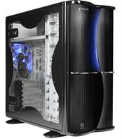

Состовляющие ПК. Корпус.

Корпус - это основа любого ПК. Условно корпуса можно разделить на вертикальные и горизонтальные. Как правило горизонтальные бля офисных компьютеров
с поддержкой только мини и микро ATX системных плат. При приобретении компьютера к выбору корпуса системного блока следует уделять особое внимание, так именно
эта составляющая ПК будет у всех на виду. Но корпус несет в себе не только эстетическое значение, так как от корпуса также зависят размеры вашего ПК,
качество охлаждения и удобность подключения внешних устройств
При выборе корпуса обращать внимание на следующие параметры:
• Материал. От материала зависит теплопроводность и надежность установки комплектующих. На сегодняшний день наиболее распространенными материалами являются
алюминиевый сплав и железо.
• Вентиляция. В корпусе должно быть достаточно отверстий для установки вентиляторов (минимум 2). Расположение внутренностей также немаловажный фактор,
влияющий на охлаждение системы.
• Производитель корпуса. Фирм производящих корпуса на рынке представлено огромное количество, поэтому и выбор не мал. При покупке корпуса от неизвестного
производителя вы можете существенно сэкономить, но и качество может оказаться низким, либо же можно купить корпус от знаменитого бренда, такого как Antec,
Foxconn, Cooler Master , A+, ASUS, но в таком случае придется выложить не малую сумму.
Отличным примером качественного и недорогого корпуса является InWin IW-X633, данное решение сочетает в себе все самое лучшее - инновационную систему вентиляции,
качественную и надежную сборку, стильный и неординарный дизайн. Если
купить компьютер в Могилеве, то это устройство обойдется вам порядка 160 у.е. но зато вы получите «упаковку» для своего компьютера -
холодную (два вентилятора в комплекте) и надежную ( материал- сталь и пластик).
Читайте также:
Интерфейсы передачи данных.
Системы охлаждения компьютера.
Следующая статья:
Сравнение компьютерной акустики 2.1 или 2.0 .